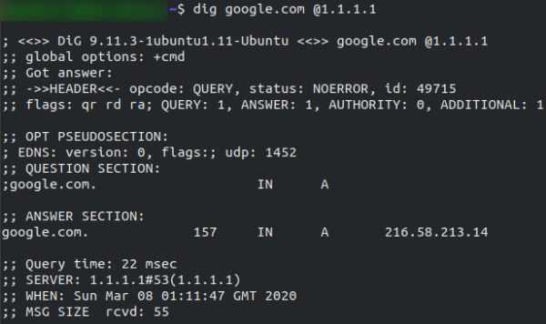
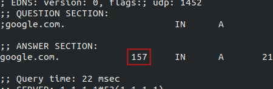

dig
Dig
When you visit a website in your web browser this all happens automatically, but we can also do it manually with a tool called
dig . Like ping and traceroute, dig should be installed automatically on Linux systems.
Dig allows us to manually query recursive DNS servers of our choice for information about domains:
dig <domain> @<dns-server-ip>It is a very useful tool for network troubleshooting.

This is a lot of information. We're currently most interested in the
ANSWER section for this room; however, taking the time to learn what the rest of this means is a very good idea. In summary, that information is telling us that we sent it one query and successfully (i.e. No Errors) received one full answer -- which, as expected, contains the IP address for the domain name that we queried.
Another interesting piece of information that dig gives us is the
TTL (Time To Live) of the queried DNS record. As mentioned previously, when your computer queries a domain name, it stores the results in its local cache. The TTL of the record tells your computer when to stop considering the record as being valid -- i.e. when it should request the data again, rather than relying on the cached copy.
The
TTL can be found in the second column of the answer section:
It's important to remember that
TTL (in the context of DNS caching) is measured in
seconds, so the record in the example will expire in
two minutes and thirty-seven seconds{kind=link}